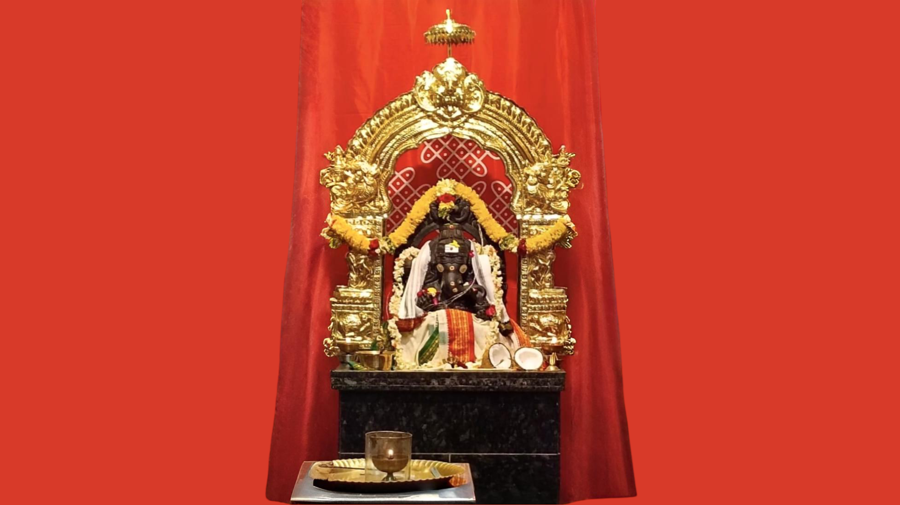
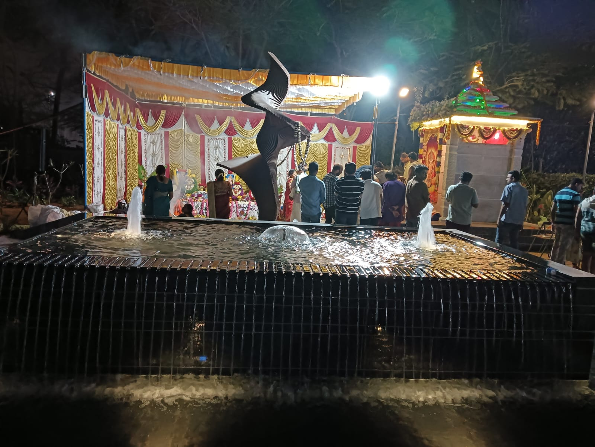
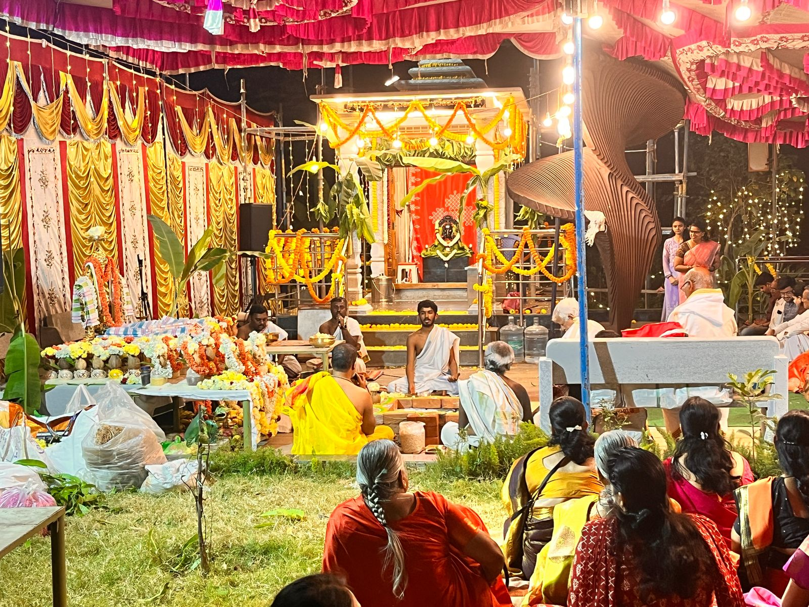

Panchamrit Abhisheka
A traditional offering performed with sacred ingredients and devotion.
View details →Shri Varasiddhi Vinayaka Temple · Arvind Oasis

Experience the divine grace and peace at our sacred temple.
Access the temple’s most-used services and information through a clear, simple experience.
Explore available worship services and contribution details.
Explore services → ₹Make a contribution and follow its verification status.
Continue to donations → ▤Review previous puja registrations and receipt details.
View history → ◷Read important announcements and community updates.
Read notices →Welcome to Shri Varasiddhi Vinayaka Temple, a sacred haven devoted to Lord Ganesha, the embodiment of wisdom, prosperity, and success. Nestled within the vibrant community of Arvind Oasis, our temple stands as a beacon of spirituality and tradition.
The temple's journey began with the auspicious Bhoomi Puja on November 23rd, 2023, followed by 48 days of the sacred Mandala Puja, culminating in the grand Pranaprathistapana on March 14th, 2024. These transformative events, witnessed by the devoted residents of Arvind Oasis, mark the temple as a place of deep faith and community spirit. Join us as we celebrate the rich traditions of daily rituals, special puja events, and spiritual gatherings that bring us closer to divine blessings and unity.

Explore the sevas currently listed by the temple. Refer to the registration page for contribution details.
A traditional offering performed with sacred ingredients and devotion.
View details →A continuing seva offered in the name of devotees on special occasions.
View details →A regular observance dedicated to Lord Ganesha.
View details →Check the official notice board for event information, puja updates and important temple communications.




Sign in to register for pujas, make donations and access receipts and registration history.